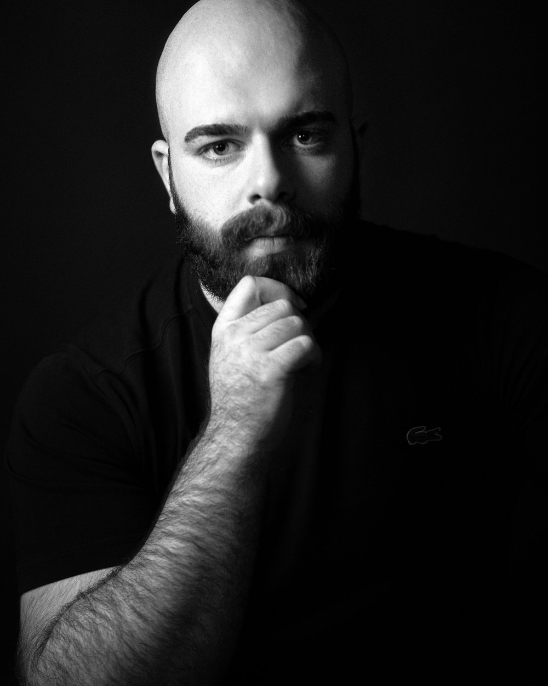

Coloristas da Vertigo. Cada projeto do portfólio leva a assinatura de quem o coloriu.

Germano Michelon Santos
Colorista sênior e fundador
Fundador da Vertigo Color, estúdio pelo qual já passaram marcas como Nike, Mercedes-Benz, Michelin e Natura. Assina a cor de videoclipes de artistas como Violet Orlandi e Spektra. Atende do estúdio em São Marcos (RS) clientes do Brasil, dos Estados Unidos, da Europa, da Arábia Saudita e da Índia.